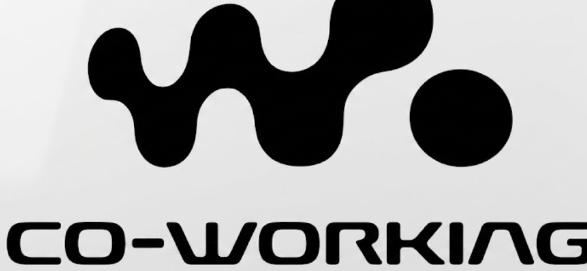
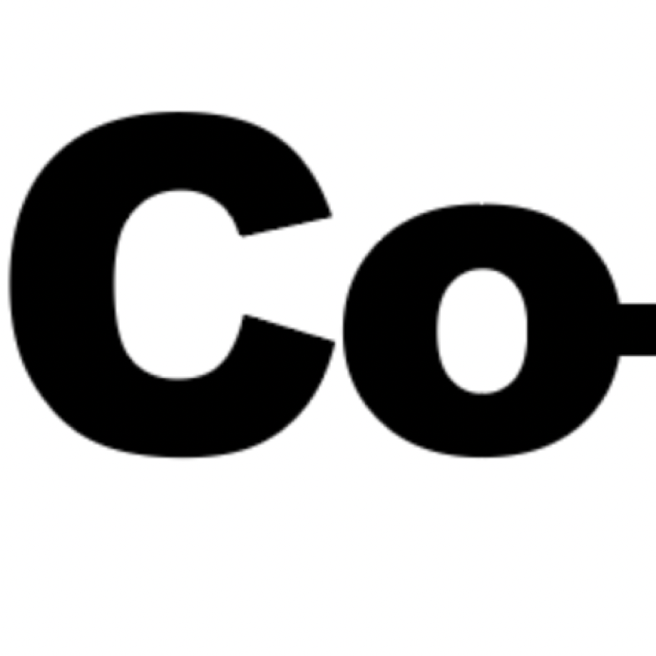
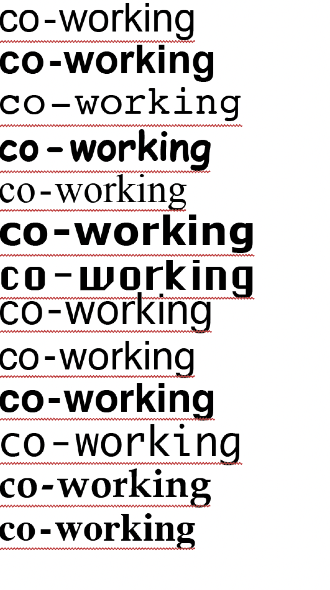

Day Pass
Free “permission slip” to leave work for happy hour — dramatizes the thesis at near-zero cost. Recurring acquisition format.
Venue: rooftop bar, TBD — sunset-facing, happy hour hours.
The fiction. The one rule: never explain the joke.
scan no. cw-arc-014 · method: dither, 1-bit
how the fiction runs on the record

wordmark studies



Day Pass · Beach Edition · Non-Alc Meeting
Free “permission slip” to leave work for happy hour — dramatizes the thesis at near-zero cost. Recurring acquisition format.
Venue: rooftop bar, TBD — sunset-facing, happy hour hours.
Real panel/Q&A staged in swimsuits at a beach DJ/concessions area. High shareability, low production build.
Venue: Jacob Riis Beach — outreach pending.
Daytime, alcohol-free networking format. Opens a Friday-morning slot. Breakfast-meeting register.
Venue: Index Space (Chinatown / Greenpoint) or N Between.
THE INVITE IS THE PRODUCT
The badge app doubles as the invite — name entry, ID photo, badge issued with role/venue/time. That badge is the RSVP.
partners — candidates, unconfirmed unless noted